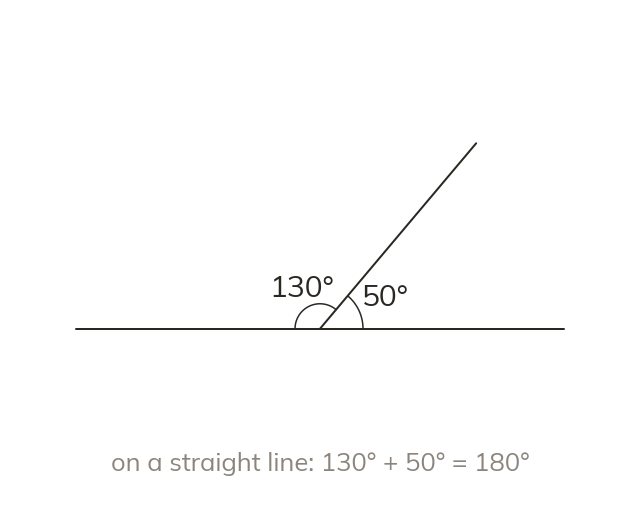

Angles around a point and on a line
Angles around a point sum to Angles on a straight line sum to
Angles around a point sum to since a full turn is
Angles on a straight line sum to since a straight line is half a turn.
Angles on a straight line sum to since a straight line is half a turn.